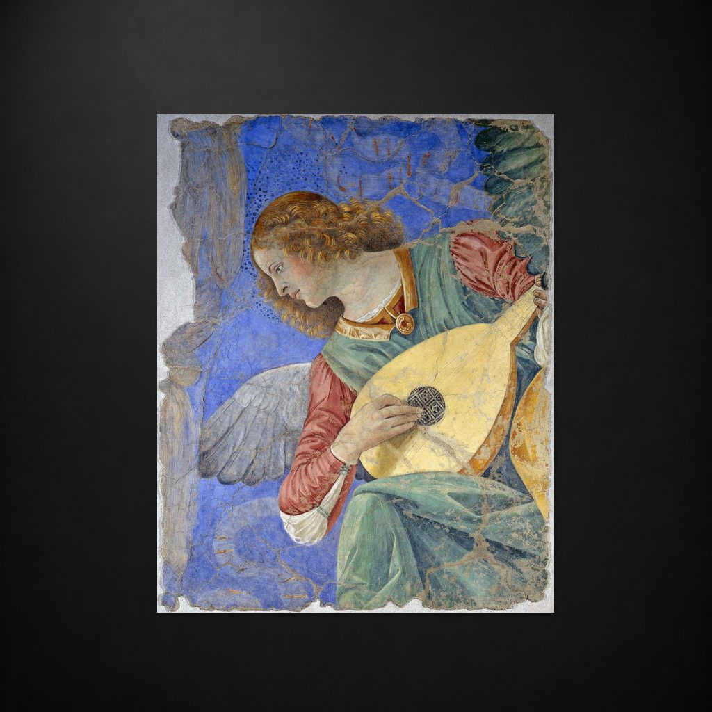

彈魯特琴的天使
梅洛佐·達·福爾利 · 約1480年
Un angelo che suona il liuto
導賞節錄
天使彈緊琴，身體、雙手同樂器喺畫裏面斜斜咁展開。呢個姿態，本來係畫畀企喺下面、抬頭仰望嘅人睇嘅。
呢塊壁畫殘片叫《彈魯特琴的天使》，係梅洛佐·達·福爾利大約喺一四八零年畫嘅，而家喺梵蒂岡博物館繪畫館第四室展出。梅洛佐嚟自福爾利，呢塊畫本來屬於羅馬十二宗徒聖殿後殿一整幅《基督升天》。嗰陣，朱利亞諾·德拉·羅韋雷樞機啱啱主持修整教堂冇幾耐；佢後來就係教宗儒略二世。
— 廣東話講稿 · Artvery
完整講解約 3 分鐘，可在 Artvery App 收聽。粵語、台灣國語、內地普通話三種語音，館內對準作品即可識別播放。
在 App Store 下載
App 免費下載，每座博物館單獨購買，一次購買永久使用。目前在香港、澳門、台灣、新加坡、馬來西亞、英國、美國、加拿大、澳洲、紐西蘭、挪威、瑞士的 App Store 提供，暫未在中國內地上架。
作品資料
- 作者
- 梅洛佐·達·福爾利
- 年代
- 約1480年
- 位置
- 梵蒂岡博物館 · 繪畫館（Pinacoteca）
- 館藏編號
- 40269.14.10
梵蒂岡博物館參觀攻略：必看名作和路線 · 梵蒂岡博物館廣東話語音導賞